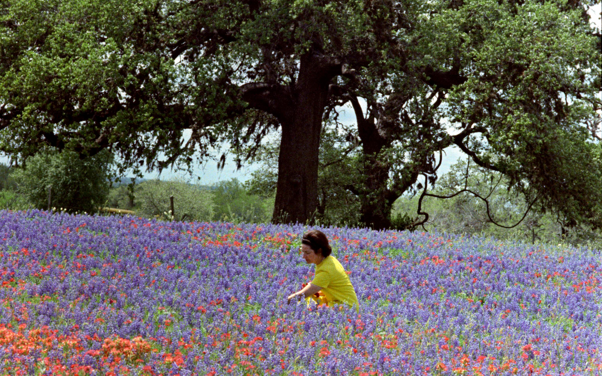

1912–2007Born in Karnack, Harrison County
Lady Bird Johnson

Before she was a first lady, Claudia Alta Taylor was a little girl in Karnack, a crossroads town of about a hundred people near the Louisiana line. A nursemaid said she was “as purty as a lady bird,” and the name stuck for life.
She grew up to run the first major legislative campaign ever led by a first lady. The Highway Beautification Act of 1965, which folks called “Lady Bird’s Bill,” went after billboards and junkyards along the new interstates. She insisted it was never just about looking pretty. In her diary she wrote that clean water, parks, pollution and poverty were all one tangled skein: “All the threads are interwoven.”
- Signed into law Oct. 22, 1965: the Highway Beautification Act.
- 1969: started the Texas Highway Beautification Awards and paid the winners out of her own checkbook for twenty years. That’s a big reason Texas roadsides bloom with bluebonnets and paintbrush every spring.
- 1982, on her 70th birthday: founded the National Wildflower Research Center to protect native plants. It became the Lady Bird Johnson Wildflower Center in 1997 and is now part of the University of Texas.
“All the threads are interwoven.”Lady Bird Johnson, diary entry, Jan. 27, 1965Sources: LBJ Presidential Library (born Karnack, Dec. 22, 1912; the nickname); Marion County Herald (Harrison County); Vineyard Gazette obituary (Karnack, population 100); Texas House Concurrent Resolution 253 (2009) (first major legislative campaign by a first lady; “Lady Bird’s Bill”); EBSCO Research Starters (signed Oct. 22, 1965); LBJ Library biography (beautification awards, 1982 founding); LBJ Library biography as reprinted by Denton ISD (1969 start of the awards); Lady Bird Johnson Wildflower Center (1997 renaming, UT Austin); USPS Stamp of Approval blog (diary quote and date).